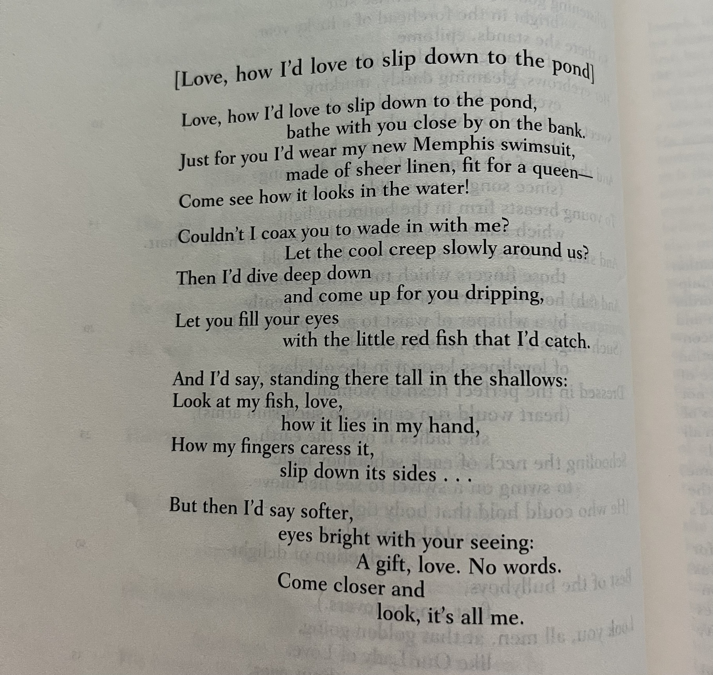

April 4th Poem:
Poem Context:

Source: Lawall, Sarah N, and Maynard Mack. The Norton Anthology of World Literature. Second Edition ed., vol. A, New York, W. W. Norton & Company, 29 July 2003.
Misc: Memphis
When I read this, I thought of this Mitski song. Though I believe the speaker of the poem is bolder. They don't wait for the listener.